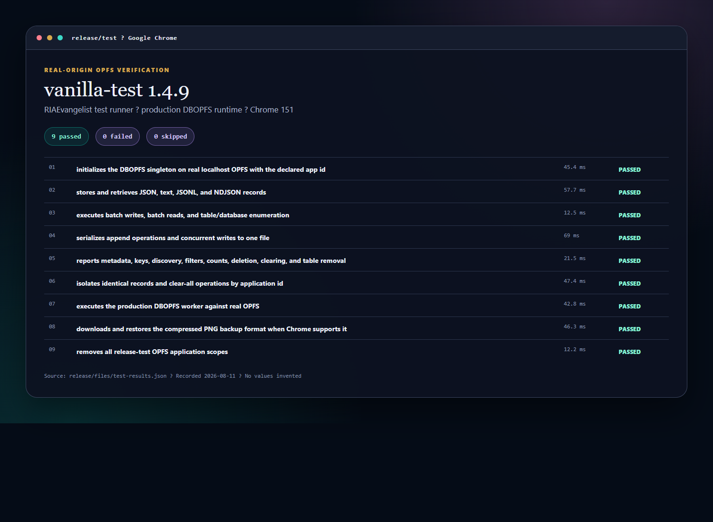
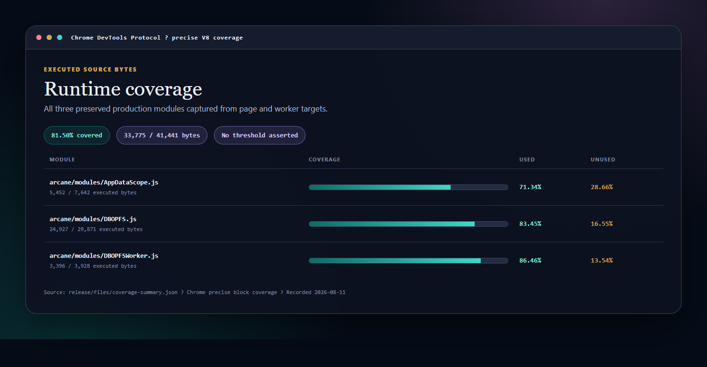

Release state
Current snapshot
- Runtime source identified
DBOPFS.js,AppDataScope.js, andDBOPFSWorker.jsretain their existing implementation. - Chrome release suite passedVanilla-test 1.4.9 reported 9 passed, 0 failed, and 0 skipped in Chrome 151 against real OPFS.
- Measured coverage recordedChrome precise coverage executed 33,775 of 41,441 runtime source bytes: 81.50%. No arbitrary threshold is asserted.
- Package verified and publishedThe clean-installed tarball, bundled
strong-typedependency, registry checksum, and publicdbopfs@1.0.0metadata match. - Developer site preparedDependency-free documentation and a structured OPFS playground ship from the release repository.
Release-bound reports
Evidence badges
The badges read immutable values generated by the local release gate and committed under release/.


No workflow implication. These are release-artifact badges. They do not claim that GitHub Actions runs on every commit.
What the run looked like
Test and coverage examples
These images are documentation views rendered from the committed 1.0.0 machine-readable evidence. They show the actual recorded names, durations, byte counts, and percentages; they are not live CI widgets and do not invent a pass threshold.
{kind=link}

{kind=link}

Release gate results
Release gates
| Gate | Required evidence | Current site claim |
|---|---|---|
| Tests | Vanilla-test suite runs in real Chrome against OPFS. | Passed: 9 / 0 / 0 |
| Coverage | Chrome DevTools precise coverage includes all three runtime modules. | Measured: 81.50% |
| Package contents | The packed artifact contains all three modules and its bundled relative dependency. | Passed |
| Clean consumer | A fresh temporary project installs the tarball with lifecycle scripts disabled. | Passed |
| Arcane pointer | Chrome imports the clean-installed module pointer and completes a real OPFS set/get. | Passed |
| License | The root license is PolyForm Noncommercial 1.0.0, with separate commercial terms offered. | Final |
| Registry | The public registry metadata and SHA-1 match the verified tarball. | Published |
| GitHub release | Tag and release point to the verified commit and evidence. | v1.0.0 |
| Pages | The project site serves the docs and structured playground over HTTPS. | Live |
What 1.0.0 proves
Compatibility claim
The release contract is narrow and testable:
Arcane OS can remove its in-tree DBOPFS copy, point its modules directory at the installed package, and continue using the existing application code without changes.
The release gate installs the packed artifact into a clean fixture, preserves the package layout, imports the installed module URL in Chrome, and completes a real OPFS round trip. The evidence is recorded in release-evidence.md.
One coordinated release
Release links
The registry package, release source, evidence, and developer site all describe the same 1.0.0 artifact.